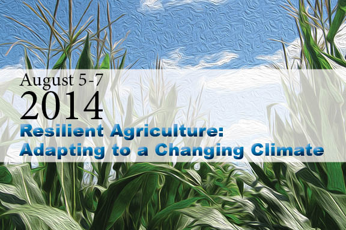

|  |
Save the Dates - August 5-7, 2014
Plan to join us in Ames, Iowa, to meet and talk with farmers, scientists and industry leaders to learn more and discuss:
- Latest science on climate impacts on agriculture
- Adaptation strategies for corn/soybean-based systems
What?A conference for farmers in the Midwest who wish to learn more about on-farm practices that heighten a cropping system’s capacity to:
Sponsored by:The Climate and Corn-based Cropping Systems Coordinated Agricultural Project—a team of scientists, from 10 Midwestern land grant universities and an agricultural research station, who are conducting research on behalf of corn and soybean producers and all who reap the benefits of our stewards of the land and the harvest. The team at 25X25—a coalition of individuals and partner organizations united behind the goal of securing 25 percent of the nation’s energy needs from renewable resources by the year 2025. |
When in 2014?Tuesday, August 5, 1 p.m., through Thursday, August 7, 2 p.m. Location:Gateway Hotel Conference Center Ames, Iowa Who Should Attend?Farmers, future farmers and advisors to farmers Projected Costs to Attend:$180… Registration fee, includes snacks Tues & Wed, Tues dinner, Wed lunch & dinner and Thurs lunch $120 (+ taxes) per night at the Gateway Hotel, breakfast provided for guests Plus travel costs (gas or airfare) |
The agenda so far (We're planning much more!):
Hear the latest about how our changing climate is affecting agriculture in the Midwest.
Presenter: Jerry Hatfield, Director of the National Laboratory for Agriculture and the Environment (USDA-ARS)
Hear from Midwestern scientists about the practical results of row crop field studies conducted in in the Corn-Belt. Scientists, extension field specialists and farmers will also share what they have learned about farmer views on vulnerability, uncertainty and risk when it comes to climate change. (Learn more about the studies, the scientists and the rest of the team at www.sustainablecorn.org.)
Tour Iowa fields where experiments are taking place, as you question the scientists about their findings regarding climate conditions, tillage, soil organic carbon, cover crops, greenhouse gas emission, integrated pest management, nitrogen sensing, and water management.
Learn and experience some of the latest available tools for on-farm decision making.
Learn about a variety of climate change adaptation recommendations developed by and for farmers and foresters, from leaders on the 25 X 25 team.
Interact with leaders from agricultural organizations, agribusiness leaders, other farmers and future farmers—FFA youth—to share your experiences and learn more about planning and adaptation strategies.
Check this page for more details, including registration information, as the date nears!